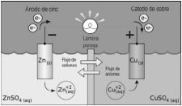

| Objetivo: |
Construir una pila. |
| Material |
|
|
| Introducción: |
|
Se llama ordinariamente pila eléctrica a un dispositivo que genera energía eléctrica por un proceso químico transitorio, tras de lo
cual cesa su actividad y han de renovarse sus elementos constituyentes, puesto que sus características resultan alteradas durante el
mismo. Se trata de un generador primario. Esta energía resulta accesible mediante dos terminales que tiene la pila, llamados polos,
electrodos o bornes. Uno de ellos es el polo positivo o ánodo y el otro es el polo negativo o cátodo.
Aunque la apariencia de cada una de estas celdas sea simple, la explicación de su funcionamiento dista de serlo y motivó una gran
actividad científica en los siglos XIX y XX, así como diversas teorías, y la demanda creciente que tiene este producto en el
mercado sigue haciendo de él objeto de investigación intensa. |
| Desarrollo Experimental: |
|
Experimento 1:
|
| Resultados y Conclusiones: |
|
1) Escribir el fundamento de la pila seca. |
| Diagrama de una Pila |
|  |